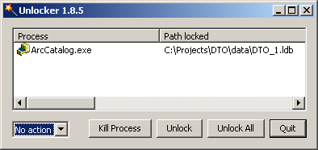

An End to Database Locks!🔗
- date
2007-08-11 12:23
- author
geographika
- category
arcobjects
- slug
an-end-to-database-locks
- status
published

Writing ArcObjects code and using an Access personal geodatabase will result sooner or later in an error along the lines of “Cannot aquire a schema lock because of an existing lock.” Spending hours going through code, making sure objects are disposed of and that all connections closed often makes very little difference. It becomes apparent some of the problems lie deeper than customised code when the same errors occur when using ArcMap or ArcCatalog without any modifications.
I have been using Unlocker, a freeware program, to solve these issues when developing with ArcObjects (or just using ArcMap..). Once installed a simple right click on an ldb or mdb file can remove any file locks, and your code is free to run again. It works with any Windows file or folder so is a useful program to have around even without geodatabases.
More reviews and an alternative download site can be found here.

- orphan
Comments🔗
1. Duarte Carreira **
Hi. This is a very nice idea. How would you go about extending this to all the other tools: get feat info? or printing? also, wms get map is routed through the proxy when you config one in OpenLayers. Would this work? (I couldn’t see the map in your example)
2. geographika **
Hi Duarte,
The use case I needed the above code for was for a simple mapping page that needed to add in WMS layers from any remote server.
It was to install on IIS / Windows, so setting up a Python CGI proxy seemed overkill, and also I’d have to whitelist all sites.
Its not going to replace all the features of a proxy (though it would be nice to have a plugin that used YQL through Openlayer.Proxyhost), but simplifies some setups.
Reply3. javier **
Hello
It is possible use YQL with geoext 2?
ReplyAdd Comment